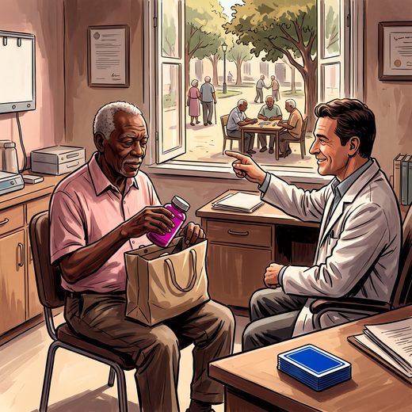

Consulta rápida à beira do leito
Condutas, doses e interações.
Referências da aula · 12
- Petersen RC, Lopez O, Armstrong MJ, et al. Practice guideline update summary: mild cognitive impairment. Report of the Guideline Development, Dissemination, and Implementation Subcommittee of the American Academy of Neurology. Neurology. 2018;90(3):126-35.
- Ngandu T, Lehtisalo J, Solomon A, et al. A 2 year multidomain intervention of diet, exercise, cognitive training, and vascular risk monitoring versus control to prevent cognitive decline in at-risk elderly people (FINGER): a randomised controlled trial. Lancet. 2015;385(9984):2255-63.
- Kivipelto M, Mangialasche F, Snyder HM, et al. World-Wide FINGERS Network: a global approach to risk reduction and prevention of dementia. Alzheimers Dement. 2020;16(7):1078-94.
- Crivelli L, Suemoto CK, Sosa AL, et al. Multidomain lifestyle intervention for the prevention of cognitive decline in at-risk older adults in Latin America (LatAm-FINGERS): a single-blind, multicentre, randomised controlled trial. Lancet. 2026;408(10553):417-429. doi:10.1016/S0140-6736(26)01278-X.DOI
- Baker LD, Espeland MA, Whitmer RA, et al. Structured vs self-guided multidomain lifestyle interventions for global cognitive function: the US POINTER randomized clinical trial. JAMA. 2025;334(8):681-691. doi:10.1001/jama.2025.12923.DOI
- Lin FR, Pike JR, Albert MS, et al. Hearing intervention versus health education control to reduce cognitive decline in older adults with hearing loss in the USA (ACHIEVE): a multicentre, randomised controlled trial. Lancet. 2023;402(10404):786-97.
- Woods B, Rai HK, Elliott E, Aguirre E, Orrell M, Spector A. Cognitive stimulation to improve cognitive functioning in people with dementia. Cochrane Database Syst Rev. 2023;1(1):CD005562.
- Kudlicka A, Martyr A, Bahar-Fuchs A, Sabates J, Woods B, Clare L. Cognitive rehabilitation for people with mild to moderate dementia. Cochrane Database Syst Rev. 2023;6(6):CD013388.
- World Health Organization. WHO guidelines on physical activity and sedentary behaviour. Geneva: WHO; 2020.
- Livingston G, Huntley J, Liu KY, et al. Dementia prevention, intervention, and care: 2024 report of the Lancet standing Commission. Lancet. 2024;404(10452):572-628.
- 2023 American Geriatrics Society Beers Criteria® Update Expert Panel. American Geriatrics Society 2023 updated AGS Beers Criteria® for potentially inappropriate medication use in older adults. J Am Geriatr Soc. 2023;71(7):2052-81.
- Freitas EV, Py L, organizadores. Tratado de Geriatria e Gerontologia. 5ª ed. Rio de Janeiro: Guanabara Koogan; 2022.
Documentos oficiais
Leis e publicações do Ministério da Saúde sobre o cuidado da pessoa idosa, de acesso livre.
Abrir os documentos